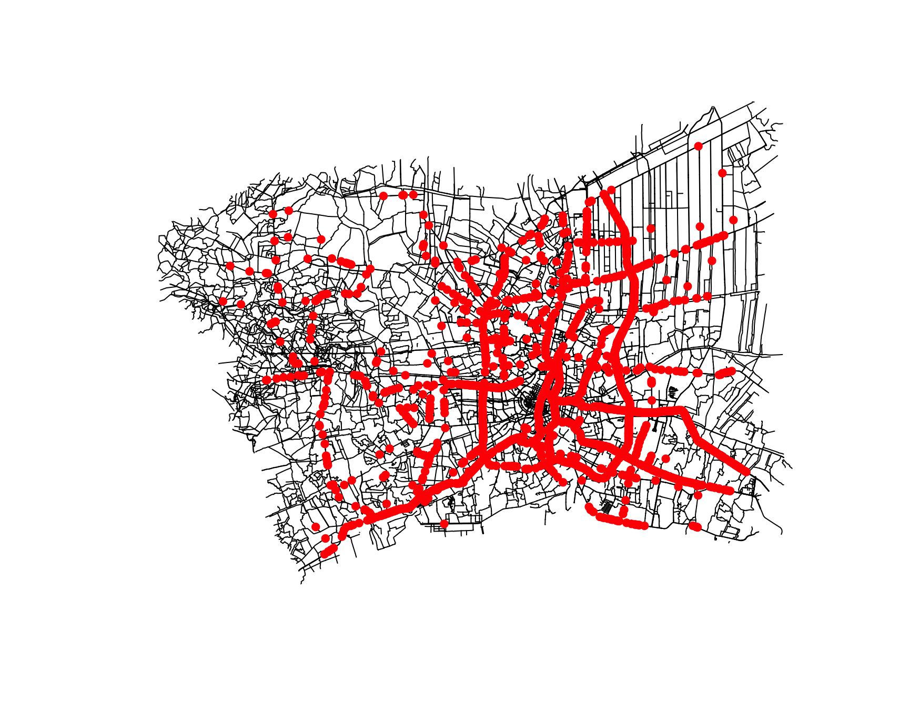

Spatial and Spatio-temporal Patterns of Road Accidents in the Bangkok Greater Metropolitan Area
Take-home Exercise 1
Author
Zhiyi Hao
Published
September 27, 2026
1 Introduction
This report looks at road accidents recorded in 2022 in the Bangkok Greater Metropolitan Area (BGMA). The BGMA here includes Bangkok, Nonthaburi, Pathum Thani, Samut Prakan, Samut Sakhon, and Nakhon Pathom.
The analysis is network-based. Accident events are matched to roads before density or distance is calculated. The steps follow Chapter 7: prepare the network, split roads into lixels, create line-centre samples, estimate network density, and run network K and G functions.
I ask four questions:
Where is recorded accident intensity highest along the road network?
How much does the intensity surface change with network bandwidth?
At what network distances are accidents more or less clustered than a network-random reference?
Do fatal and non-fatal accidents show a different cross-type relationship along the network?
Here, intensity means recorded events along the available network. It is not crash risk because the data do not include traffic volume, vehicle kilometres, road capacity, or complete reporting coverage.
2 Task 1: Data Preparation and Study Design
2.1 Data sources
I used data/thai_road_accident_2019_2022.csv from the Thailand Road Accident 2019–2022 dataset, accessed 27 September 2026. The analysis uses 2022 only. One row with a unique acc_code is one accident event. Records at the same coordinates remain separate when their IDs are different.
The administrative boundary is data/THA_ADM1.geojson from geoBoundaries. It is used to make the six-province BGMA window. The road network is data/bgma_major_roads.gpkg, a local extract from the Geofabrik Thailand OpenStreetMap download. It is not a Thai government road register. It is used as the road support for the network analysis.
The local network keeps major motor-vehicle road classes and includes a 5-km buffer around the six-province union. This filtering rule defines the road support used by the network analysis.
2.2 Packages and reproducibility
spNetwork is the main package. The code uses the Chapter 7 functions lixelize_lines(), lines_center(), nkde(), kfunctions(), tnkde(), and cross_kfunctions().
Coordinate Reference System:
User input: WGS 84 / UTM zone 47N
wkt:
PROJCRS["WGS 84 / UTM zone 47N",
BASEGEOGCRS["WGS 84",
ENSEMBLE["World Geodetic System 1984 ensemble",
MEMBER["World Geodetic System 1984 (Transit)"],
MEMBER["World Geodetic System 1984 (G730)"],
MEMBER["World Geodetic System 1984 (G873)"],
MEMBER["World Geodetic System 1984 (G1150)"],
MEMBER["World Geodetic System 1984 (G1674)"],
MEMBER["World Geodetic System 1984 (G1762)"],
MEMBER["World Geodetic System 1984 (G2139)"],
MEMBER["World Geodetic System 1984 (G2296)"],
ELLIPSOID["WGS 84",6378137,298.257223563,
LENGTHUNIT["metre",1]],
ENSEMBLEACCURACY[2.0]],
PRIMEM["Greenwich",0,
ANGLEUNIT["degree",0.0174532925199433]],
ID["EPSG",4326]],
CONVERSION["UTM zone 47N",
METHOD["Transverse Mercator",
ID["EPSG",9807]],
PARAMETER["Latitude of natural origin",0,
ANGLEUNIT["degree",0.0174532925199433],
ID["EPSG",8801]],
PARAMETER["Longitude of natural origin",99,
ANGLEUNIT["degree",0.0174532925199433],
ID["EPSG",8802]],
PARAMETER["Scale factor at natural origin",0.9996,
SCALEUNIT["unity",1],
ID["EPSG",8805]],
PARAMETER["False easting",500000,
LENGTHUNIT["metre",1],
ID["EPSG",8806]],
PARAMETER["False northing",0,
LENGTHUNIT["metre",1],
ID["EPSG",8807]]],
CS[Cartesian,2],
AXIS["(E)",east,
ORDER[1],
LENGTHUNIT["metre",1]],
AXIS["(N)",north,
ORDER[2],
LENGTHUNIT["metre",1]],
USAGE[
SCOPE["Navigation and medium accuracy spatial referencing."],
AREA["Between 96°E and 102°E, northern hemisphere between equator and 84°N, onshore and offshore. China. Indonesia. Laos. Malaysia - West Malaysia. Mongolia. Myanmar (Burma). Russian Federation. Thailand."],
BBOX[0,96,84,102]],
ID["EPSG",32647]]
The accident file supplies events, the boundary supplies the administrative study window, and the road file supplies the support on which network distances are calculated.
# A tibble: 6 × 2
measure value
<chr> <int>
1 Raw records 81735
2 2022 national records 21006
3 2022 BGMA records 3779
4 Missing or invalid coordinates 189
5 Duplicate accident codes 0
6 Repeated coordinate rows 321
Records with missing coordinates remain available for non-spatial counts. They are excluded only when a method needs a location. Duplicate accident IDs are removed if they occur. Separate events with identical coordinates are retained because repeated accidents can represent a recurring location.
EPSG:32647 is used for metre-based network calculations. The BGMA polygon defines the reporting window. The road network has a 5-km external buffer so local calculations are less affected by the administrative edge, while reported accident points remain inside the six-province union.
The road file is a major-road analysis network rather than every mapped footpath or service road. Events recorded on road classes absent from this extract may fail to match.
The following checks make the Chapter 7 preparation explicit. The accident points and road lines are both in a projected CRS with metre units before snapping, lixel construction, density estimation, or network-distance analysis.
For the line network, I check zero-length features separately because a non-empty line can still have no usable length. st_make_valid() is applied to the administrative boundary before the six-province union. Repeated coordinates stay as separate accident events; only duplicate accident IDs are removed.
The network-building article separates valid line geometry from a fully checked graph. The diagnostic finds 5187 connected component(s), 1137 dangling vertices, and 2 vertices within the 0.1-metre tolerance. split_graph_components() is kept as a separate step. The largest component has 22,349 vertices and 25,226 edges. These numbers describe the extracted network; they do not prove that every mapped intersection is a real drivable connection.
2.6 Analytical assumptions and methodological decisions
All methods in this report treat accidents as events on a road network rather than as points in open space. This is a modelling choice, so the main assumptions are stated before the results.
Snapping.snapPointsToLines2() assumes that the nearest included road is the road where the event occurred. The matching summary gives the offset distribution and the number of events more than 100 m from a road. I keep those events for sensitivity review instead of dropping them silently.
Network completeness. The network is a major-road extract (motorway to tertiary and their links) from OpenStreetMap, not an official traffic register. An event on a missing road class is matched to the nearest included road, which may put it on the wrong corridor. The graph check covers components and close vertices, but missing road classes and complex junctions remain limitations.
NKDE (Task 2). The simple method can count an event’s influence more than once near a junction. The spNetwork documentation identifies this as a possible over-estimation. I keep it as a labelled baseline and use the discontinuous method for the main map because it divides event mass at junctions. Both methods use a quartic kernel and a fixed 1000 m bandwidth. The 500 m, 1000 m and 2,000 m comparison checks whether the result changes with the smoothing scale.
Network K/G (Task 3). The reference model is a binomial point process on the observed road network. The number of events stays fixed, while their locations are redrawn along network length rather than across the whole map. A curve outside the envelope means the events differ from network-random placement. It does not test planar CSR. With 9 simulations, the envelope is exploratory and is not a precise significance level.
K is cumulative: it counts event pairs within each network distance. G is local: it focuses on a band around each distance. K can stay high because it includes all shorter distances, while a peak in G points to a more specific distance band. I read the two plots together. The K-function article also uses Monte Carlo points on the network as the comparison. The reference index labels kfunctions() as maturing, so this is an exploratory result rather than a final significance claim.
TNKDE (Task 4 extension).tnkde() combines a network kernel with a time kernel. This treats the spatial and time smoothing scales as separate choices. If accident locations change between seasons, one 1000 m / 30-day pair may smooth out some of that change. The first and last parts of the year also have less neighbouring time information than the middle of the year.
Network cross-K (Value-Added).cross_kfunctions() keeps the non-fatal events fixed and redraws only the fatal-event locations along the network. This is not a random-labelling test because the severity labels are not shuffled among the observed locations. A curve outside the envelope means fatal events are closer to non-fatal events than a network-random fatal layer would be. It does not show that severity is special after shared roads and traffic exposure are taken into account.
2.7 Visualising the events and network
The initial map displays the network and the recorded 2022 accident events. Red points are kept visible so the event layer can be checked against the road support used later.
plot(st_geometry(network), border ="lightgrey")plot(accidents_sf, add =TRUE, col ="red", pch =19)

Road network with recorded 2022 accident events shown in red.
TipWhat this check tells me
The red points confirm that the accident layer overlaps the road support used for the later network analysis. Dense groups still cannot be called high-risk from this map alone because the map shows recorded event locations, not traffic exposure or a denominator. The point layer is checked before snapping, so this figure also helps separate data coverage from the later network representation.
The static tmap map below keeps the network, boundary and event layer in one reproducible figure.
2022 accident events and the OpenStreetMap-derived BGMA analysis network.
TipMy reading of this map
This is a coverage check before it is an analytical result. Dense red locations may reflect repeated events, more roads, more traffic, or reporting coverage. I do not call them higher-risk locations at this stage.
3 Matching Accidents to the Road Network
3.1 Snapping events to roads
The points are snapped to the nearest road with snapPointsToLines2(). I keep the original point layer, the snapped point layer, the matched road ID, and the offset distance.
I do not remove a point only because it is more than a convenient distance from a road. A large offset can indicate a coordinate problem, a missing road class, or an accident recorded beside rather than directly on a road. The median offset is 3.97 m and the 95th percentile is 10.78 m. 2 of 3586 events are more than 100 m from the nearest included road, so the matching summary is retained for sensitivity checking.
Accident locations after snapping to the analysis network.
NoteMatching decision
The snapped point is an analysis representation of the recorded location. It does not claim that the original coordinate was measured at the road centreline. Keeping match_distance_m lets the reader check the match.
Temporal summaries describe when events occur, but not where they occur. I keep them as context for TNKDE, where space and time are estimated together.
5 Task 2: First-Order Network Analysis
5.1 Preparing the lixels
The road network is split into lixels and their centres are used as network sampling points. A 1,500-metre lixel resolution is used for the full BGMA run so the calculation remains reproducible on a normal laptop.
The report uses 1,500-metre lixels and 750 metres as the minimum lixel length. This changes the sampling resolution, not the road network, event locations, network distances, or study area. The selected resolution is recorded so another analyst can reproduce the same run.
5.2 NKDE method choice
The simple method is calculated as a baseline. The discontinuous method is used for the main estimate because the spNetwork documentation notes that the simple method can overestimate density at intersections.
The density values are multiplied by 1,000 and reported as recorded events per network kilometre. This is a line-based intensity, not an areal density. The 1-km bandwidth is the starting scale used here, not a final answer.
The spNetwork NKDE article describes three choices. The simple method is quick, but it can count event mass more than once at intersections. The discontinuous method divides the mass at intersections and is the main estimate here. The continuous method adds another correction and gives a smoother surface, but it is much slower on a large network. The detailed article explains the same choices through the method argument in nkde().
I do not use the continuous version for the full BGMA result because its recursive calculation is much slower on this network. The reported surface is the discontinuous result.
Discontinuous network KDE for recorded accidents per network kilometre.
The red points make it possible to compare the estimated intensity with the original accident locations. The density surface is not shown on its own.
TipHow I read the NKDE surface
Bright road segments have higher estimated event intensity at this network scale. The discontinuous method divides event influence at intersections, so connected edges do not automatically multiply the event mass. I compare this map with the simple baseline before calling a hotspot stable.
5.4 Simple-versus-discontinuous comparison
The simple method is kept only as a labelled baseline (see Analytical assumptions). Before relying on the discontinuous map, I check how much the two methods actually disagree at the lixels the map highlights as hotspots.
# A tibble: 4 × 2
measure value
<chr> <dbl>
1 Spearman correlation (simple vs discontinuous) 0.988
2 Top-5% lixels shared between methods 1514
3 Top-5% lixels, simple only 595
4 Top-5% lixels, discontinuous only 595
A high top-5% overlap means the same corridors are not only appearing because the simple method over-counts intersections. A low overlap would mean the junction effect changes the hotspot ranking. In that case, the discontinuous map is the safer one to use.
TipWhat I noticed
The saved simple and discontinuous estimates have a Spearman correlation of 0.988. Their top 5% lixels overlap in 1514 samples, while 595 simple-only and 595 discontinuous-only samples remain. The broad ranking is similar, but the method still changes which local segments fall into the highest-intensity group. I use the discontinuous result because it handles junction mass more conservatively.
The bandwidth comparison is kept as a sensitivity run on the same full network. A hotspot is treated as more credible only when it remains visible under the pre-specified 500-, 1,000-, and 2,000-metre alternatives.
if (all(is.na(nkde_bandwidth_results$maximum_density_per_km))) {cat("The bandwidth sensitivity values are not available in the saved results.\n")} else {ggplot(nkde_bandwidth_results, aes(bandwidth_m, maximum_density_per_km)) +geom_line(colour ="#16805c", linewidth =0.9) +geom_point(colour ="#16805c", size =2.5) +scale_x_continuous(breaks = candidate_bandwidths) +labs(title ="Maximum recorded-event intensity by network bandwidth",x ="Bandwidth (m)",y ="Maximum recorded events per network km" ) +theme_minimal(base_size =12)}
Sensitivity of the network KDE summary to the selected bandwidth.
The sensitivity plot is a stability check rather than a search for the bandwidth that produces the largest hotspot. The final interpretation should report both the numerical summary and whether the same corridors remain visible across the three pre-specified scales.
TipWhat I noticed
The maximum recorded intensity falls from 0.139 events per km at 500 m to 0.041 at 1,000 m and 0.014 at 2,000 m. A wider kernel spreads the event influence over more road length, so the peak becomes lower. This shows that hotspot height depends on the chosen scale. The table alone does not show whether the same road segments stay on top at all three bandwidths.
6 Task 3: Network K and G Functions
The null model is a binomial point process on the observed road network: the number of events is fixed, while event locations are simulated along the network. This is the comparison for “are recorded events closer together along the network than expected under network randomness?” It is not planar CSR.
The full BGMA run uses the network K/G method over a 0–3 km range. The distance grid and simulation count are recorded with the result.
kfunctions() and its simulation envelope take time to run with 3586 events and 39480 road features. I use nine simulations with the event count fixed and a 3-km range. This is a network-distance analysis, not a planar CSR test.
The two panels answer different parts of the same question. K is cumulative: it shows how the number of nearby event pairs accumulates as network distance increases. G is local: it shows the distance bands where the nearest-neighbour relationship is strongest. They are therefore complementary, not duplicate plots.
TipWhat I noticed
In the saved result, both observed curves stay above the upper network-random envelope at non-zero distances. K shows that nearby event pairs accumulate faster than under the selected network reference. G adds the distance detail: its strongest local peak is near 100 m, followed by another rise around 500–900 m. I read this as short-distance concentration together with a wider corridor-scale pattern. These curves show a strong departure from the reference model at the tested distances, but they are not formal global p-values because only nine simulations were used.
7 Temporal Network KDE (Space-Time Extension of Task 2)
Time is measured in days since 1 January 2022. tnkde() combines a network kernel and a time kernel, so each value describes intensity at a network sample and a selected time. I use the product-kernel approach from the TNKDE article. I do not use k_nt_functions() because it is marked as experimental in the package documentation.
Temporal network KDE at four points in the 2022 calendar year.
The baseline uses a 1-km network bandwidth and a 30-day time bandwidth. TNKDE values are multiplied by 1,000 and shown per network kilometre. This is a joint network-time intensity estimate, not an annual crash rate or a causal risk estimate. The displayed facets are days 0, 90, 180, and 270; the saved output is evaluated every 30 days through day 360.
TipWhat I noticed
The panels use one common log colour scale, so the colours can be compared across dates. They show some redistribution of the strongest road segments, especially around the central and southern corridors, but the overall network pattern remains similar. I would describe this as a modest temporal change, not a large seasonal shift. The map does not provide a significance test; the result remains sensitive to the fixed 30-day temporal bandwidth and the four displayed dates.
8 Value-Added Analysis: Network Cross-K Function (Fatal vs Non-fatal)
8.1 Fatal and non-fatal event types
Fatal means at least one recorded death. Non-fatal means zero recorded deaths. Events with unknown fatality values are left out. The question is whether the two groups are closer along the network than the selected reference would produce.
The reference envelope keeps non-fatal events fixed and simulates fatal-event locations on the same network. The direction matters: fatal around non-fatal is not the same question as non-fatal around fatal. Fatal events are fewer, so the counts and uncertainty matter. The reference index labels cross_kfunctions() as maturing, so this result is directional and exploratory.
TipWhat I noticed
The observed fatal-around-non-fatal cross-K curve is above the upper network simulation envelope across the evaluated non-zero distances. This is cumulative evidence that fatal events have more nearby non-fatal events than expected under the selected reference. Cross-G is local and shows the distance bands where this cross-type relationship is strongest. The two panels support the same directional reading, but they are not formal p-values: the function is documented as maturing, only nine simulations were used, the fatal group is smaller, and the result still depends on the selected network reference. The result does not show that non-fatal events cause fatal events.
9 Task 4: Integration and Interpretation
The network KDE shows where recorded accident intensity is concentrated. TNKDE adds time. Network K/G shows whether events are closer together than the network-random reference. Cross-K compares fatal and non-fatal events.
Evidence
Current result
Interpretation status
Discontinuous NKDE
Higher recorded-event intensity is concentrated on selected road segments at the 1000 m smoothing scale.
Descriptive first-order evidence; the simple/discontinuous ranking is highly similar, while intensity magnitude changes with bandwidth.
Network K/G
Observed K and G remain above the nine-simulation envelope at non-zero distances from 100 m to 3,000 m.
Strong exploratory departure from network-random placement.
TNKDE
The maximum network-time intensity is highest in a later 2022 time slice, with the strongest segments changing over time.
Descriptive spatio-temporal evidence; the 30-day time bandwidth is fixed.
Fatal/non-fatal cross-K/G
Fatal events are closer to non-fatal events than the directional network-random reference at the evaluated distances.
Value-added exploratory evidence; group size, shared roads, and the maturing API limit certainty.
These results answer different questions. A stable NKDE hotspot is a first-order concentration. A K/G departure is a second-order result relative to a network reference. A cross-K departure describes a relationship between two event types. Each result depends on its network, bandwidth, distance range, and simulation settings.
The local road file is an OSM-derived major-road extract, not a complete official traffic network. The results describe recorded accidents supported by this analysis network. Missing traffic exposure also prevents a claim about crash probability or risk.
The first-order and second-order results point to similar corridors. The NKDE highlights high-intensity road segments, and the K-function departs from its envelope over the same broad distance range. This does not prove that the accidents caused one another. The network itself is uneven, with more lixels and shorter segments in central Bangkok, which may also increase the apparent clustering.
9.1 Main findings
ImportantWhat the analysis shows
Data coverage: After restricting the accident file to 2022 and the six BGMA provinces, 3586 located events remain for the spatial analysis. There are 321 repeated-coordinate rows. I keep these as separate accidents because their accident IDs are different.
Network intensity: The discontinuous NKDE identifies uneven recorded-event intensity along the road network at the 1-km bandwidth. The highest values are concentrated on a small number of motorway and primary-road segments. This is a screening result for recorded events, not a crash-risk rate.
Network interaction: Observed K and G are above the upper network-random envelope at every non-zero distance from 100 m to 3000 m. The strongest local G departure occurs at 100 m. This is strong exploratory evidence of closer event spacing than the selected network reference.
Time: The TNKDE maximum is highest around day 300 of 2022 in the saved result. The strongest segments change between time slices, so the annual map hides part of the temporal variation.
Severity relationship: Fatal events are closer to non-fatal events than the simulated fatal layer at the evaluated network distances. This suggests shared corridors or shared exposure. It does not establish that a fatal accident is more likely at a particular road.
The common limitation is the same throughout: the network is an OSM-derived major-road extract and the data do not provide traffic volume. The findings describe recorded accidents supported by this network.
10 Task 5: Geovisualisation and Analytical Interpretation
Each major figure has a short note about the pattern, the evidence, and the main limitation. The code and its figure stay together.
11 Task 6: Public-Safety Planning and Management
The results can be used for an initial screening process. Compare road segments across the discontinuous NKDE map and the 500 m, 1,000 m and 2,000 m runs before sending a location for safety review. A segment that stays visible at more than one scale is a stronger screening candidate than a segment that appears at one scale only. The sensitivity table shows that peak intensity changes with scale, so persistence should be checked at segment level. TNKDE also shows when a corridor is stronger, which can help with patrol timing or seasonal awareness work.
The cross-K result adds severity to this screening. Fatal events occur near non-fatal events more often than the network-random fatal layer would produce. A ranking based only on event counts may miss corridors where fewer events include more fatalities. Candidate corridors should be compared by both event count and recorded severity. Corridors that remain visible in the NKDE map, bandwidth comparison and K-function range can be sent for engineering review, such as junction design, lighting, signs or speed control.
These results should not trigger an intervention on their own. Shortlisted segments should be checked against traffic volume, road length, junction design, speed limits, lighting, land use, weather and emergency response time. A repeated location is a screening signal. A high intensity value without an exposure denominator is not a risk estimate; the corridor may simply carry more traffic or have better reporting coverage.
K/G and cross-K show whether nearby events are more common than expected on the available network and whether fatal events have a different relationship with non-fatal events. They cannot prove causation or show that a road is intrinsically dangerous. Any action should also use several years of data because one year cannot separate a persistent problem from a temporary traffic or reporting pattern.
12 Conclusion
This analysis keeps the spatial support consistent with the accident process by using the road network throughout. The result describes recorded accident intensity and network interaction for 2022 BGMA events. The conclusions apply only to the available network, the recorded events and the stated reference models.
13 Reproducibility
All paths are relative to Take-home_Ex. The accident data, boundary data, road-network source and filtering rule, package version, random seed, lixel resolution, bandwidths, distance range, and simulation count are recorded in the report.
AI Use Declaration: Generative AI was used to improve the English language, grammar and clarity of the technical report after completion of the student’s own analysis. No AI-generated code, analytical interpretation or conclusions were used in the submitted work.